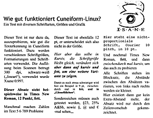
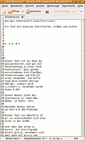

Cuneiform-Linux
Dieser Artikel wurde für die folgenden Ubuntu-Versionen getestet:
Ubuntu 16.04 Xenial Xerus
Ubuntu 14.04 Trusty Tahr
Zum Verständnis dieses Artikels sind folgende Seiten hilfreich:
Cuneiform  ("Keilschrift") ist ein sehr ausgereiftes russisches OCR-Programm, das ursprünglich für Windows entwickelt wurde und z.T. unter Open-Source-Lizenz steht. Seit 2008 wird an einer Cuneiform-Linux-Portierung gearbeitet, die sehr gute Ergebnisse liefert. Unterstützt wird eine Vielzahl von Sprachen, als Eingabedateien können alle gängigen Bild-Formate verwendet werden, die Ausgabe kann in verschiedenen Text-Formaten, oder auch in html erfolgen. Es handelt sich um eine Kommandozeilen-Programm; eine Integration in z.B. XSane oder in "Frontends" (z.B. YAGF) ist aber möglich.
("Keilschrift") ist ein sehr ausgereiftes russisches OCR-Programm, das ursprünglich für Windows entwickelt wurde und z.T. unter Open-Source-Lizenz steht. Seit 2008 wird an einer Cuneiform-Linux-Portierung gearbeitet, die sehr gute Ergebnisse liefert. Unterstützt wird eine Vielzahl von Sprachen, als Eingabedateien können alle gängigen Bild-Formate verwendet werden, die Ausgabe kann in verschiedenen Text-Formaten, oder auch in html erfolgen. Es handelt sich um eine Kommandozeilen-Programm; eine Integration in z.B. XSane oder in "Frontends" (z.B. YAGF) ist aber möglich.
Installation¶
Cuneiform-Linux ist in den Paketquellen vorhanden, es muss das Paket
cuneiform (multiverse)
 mit apturl
mit apturl
Paketliste zum Kopieren:
sudo apt-get install cuneiform
sudo aptitude install cuneiform
installiert[1] werden.
Manuelle Installation¶
Hinweis:
Derzeit funktioniert Cuneiform-Linux nur auf Computern mit x86 und amd64-Prozessoren!
Um Cuneiform-Linux selbst erstellen zu können, werden folgende Pakete benötigt[1]:
cmake
mit apturl
Paketliste zum Kopieren:
sudo apt-get install cmake
sudo aptitude install cmake
Vor der Installation sollte das Paket cuneiform-common entfernt werden, dessen Inhalt ist in der selbstkompilierten Version von Cuneiform enthalten.
Der Quellcode der aktuellen Version kann als tar.gz-Archiv von der Projektseite heruntergeladen werden. Das Archiv entpacken[2] und das Programm kompilieren. Dazu im Terminal[3] in den entstandenen Cuneiform-Linux-Ordner wechseln und dort
mkdir cuneiform-linux-x.x.x cd cuneiform-linux-x.x.x cmake -DCMAKE_BUILD_TYPE=relwithdebinfo .. ## Die Punkte und das Leerzeichen davor sind wichtig!
durchführen ("x.x.x" steht dabei für die verwendete Version). Das Programm wird damit mit Optimierungen und Debugging-Symbolen kompiliert, dann normal[4] erstellen und installieren.
Hinweis!
Fremdsoftware kann das System gefährden.
Nach Installation muss ein
sudo ldconfig
durchgeführt werden, wenn die in /usr/local/lib erstellten Bibliotheken beim Programmstart nicht gefunden werden.
Bedienung¶
Die allgemeine Syntax für Cuneiform-Linux auf der Kommandozeile lautet
cuneiform -l [SPRACHE] -f [FORMAT] -o [AUSGABE-DATEI] ([EXTRAOPTIONEN]) [BILDDATEI]
Dabei stehen die Optionen für die Sprache des Eingabedokuments (-l), das Ausgabeformat (-f) und den Namen der Ausgabe (-o). Außerdem können weitere spezielle Optionen verwendet werden, --dotmatrix zum Erkennen von Vorlagen, die mit Nadeldruckern erstellt wurden, --fax für Faxvorlagen, sowie --singlecolumn für Vorlagen, die nur einspaltig eingelesen werden sollen. Das Kommando wird mit dem Dateinamen der zu verarbeitenden Vorlage abgeschlossen.
Cuneiform-Linux ist in der Lage, Spalten zu erkennen, und die Vorlagen entsprechend aufzuarbeiten, so dass Text in Spalten tatsächlich von Spalte zu Spalte erfasst und entsprechend fortlaufend abgespeichert wird. Die Originalversion kann auch problemlos Tabellen erkennen und wiedergeben; dieses Merkmal ist allerdings in der Linux-Portierung momentan nicht implementiert (siehe 260327).
Sprachen¶
Standardmäßig werden Texte in englischer Sprache/Zeichensatz zugrunde gelegt; möglich sind folgende Sprachen/Zeichensätze:
| unterstützte Sprachen | |||||||
| Option | Sprache | Option | Sprache | Option | Sprache | ||
eng | englisch | ger | deutsch | fra | französisch | ||
rus | russisch | swe | schwedisch | spa | spanisch | ||
ita | italienisch | tur | türkisch | ukr | ukrainisch | ||
srp | serbisch | hrv | kroatisch | pol | polnisch | ||
dan | dänisch | por | portugiesisch | dut | niederländisch | ||
cze | tschechisch | rum | rumänisch | hun | ungarisch | ||
bul | bulgarisch | slo | slowenisch | lav | lettländisch | ||
lit | litauisch | est | estländisch | ruseng | zweisprachig russisch/englisch | ||
Allerdings existiert anders als bei tesseract-ocr keine Möglichkeit, zur Verbesserung der Ergebnisse die Zeichenerkennung zu trainieren, oder neue Sprachen hinzuzufügen.
Ausgabeformate¶
| unterstützte Ausgabeformate | ||
| Option | Format | Kurzbeschreibung |
html | HTML Format | "webfähige" Version mit Bildern und ansatzweiser Schriftarten-Erkennung |
hocr | hOCR HTML Format | wie "html", aber mit zusätzlichen unsichtbaren Informationen, allerdings keine exakte Layout-Wiedergabe; z.B. zum Erstellen von Sandwich-PDFs geeignet |
native | Cuneiform 2000 Format | unter Ubuntu nicht nutzbar; es entstehen unlesbare .tga-Dateien |
rtf | RTF-Format | einfache Layout-Erkennung; erzeugt formatierte Text-Dateien mit Spaltenerkennung, unterschiedlichen Schriftgrößen und -arten; keine Grafiken, statt dessen Platzhalter-Absätze |
smarttext | Nur-Text mit TeX-Absätzen | reiner Text mit exakten Zeilenumbrüchen wie in der Vorlage, Absätze bei größeren Zeilenabständen |
text | Nur-Text | reiner Text mit Absatzumbrüchen bei größerem Abstand zwischen den Zeilen/Absätzen; wird verwendet, wenn keine Option angegeben wird |
Beispiele¶
|  |
| Original.png |
html in firefox |
hocr in firefox |
rtf in OpenOffice |
|  |
smarttext in gedit |
text in gedit |
Die Beispiele (alle mit xsane2cunei erstellt) zeigen, in welchem Qualitätsrahmen sich die Erkennung abspielt. Die reine Texterkennung ist sehr hoch, Schwierigkeiten treten ggf. bei Zahlen im Text auf. Die Spaltenerkennung ist gelegentlich nicht zuverlässig, manchmal scheint als erstes der kürzeste Absatz ausgelesen, und dann der jeweils nachfolgende Absatz (vertikal gesehen, unabhängig von der Spalte, in der er sich befindet) angeschlossen zu werden (im Beispiel allerdings exakte Erkennung). Im einfachen Textformat ist nicht immer klar, wann eine neue Zeile begonnen wird, und wann nicht; smarttext ist da eindeutiger. Die Layout-Erkennung ist im .rtf-Format akzeptabel, allerdings werden die Schriftgrößen/Arten z.T. unzuverlässig erkannt. Die .html- und .hOCR-Ausgaben sind äußerlich fast identisch; in den .hOCR-Dateien sind aber weitere Informationen zum Layout, Grafik etc. "unsichtbar" gespeichert, die .hOCR-Datei ist auch ca. 12mal so groß wie die .html-Version (zu hOCR siehe auch README ).
Einbindung in XSane¶
Auch Cuneiform-Linux lässt sich, wie tesseract-ocr, mittels eines Skriptes direkt aus XSane heraus verwenden. Das folgende Skript in einen Editor[5] kopieren, unter einem aussagekräftigen Namen, z.B.xsane2cunei.sh abspeichern und ausführbar[6] machen:
1 2 3 4 5 6 7 8 9 10 11 12 13 14 15 16 17 18 19 20 21 22 23 24 25 26 27 28 29 30 31 32 33 34 35 36 37 38 39 40 41 42 43 44 45 46 47 48 49 50 51 52 53 54 55 56 57 58 59 60 61 62 63 64 65 66 67 68 69 70 71 72 73 74 75 76 77 78 79 80 81 82 83 84 | #!/bin/bash # # ############################################################################### # # # xsane2cunei 0.3 # # # # *** cuneiform made simple *** # # # # ############################################################################### # # xane2cunei is a wrapper to be able to use Cuneiform-Linux with XSane # # # TEMP_DIR=~/tmp/ # folder for temporary files ERRORLOG="xsane2cunei.log" # file where STDERR goes if [[ -z "$1" ]] then echo "Usage: $0 [OPTIONS] xsane2cunei scans image files with XSane, recognizes the text using cuneiform-linux and outputs the text in a file. OPTIONS: -i <file1> define input file (any image-format supported) -o <file2> define output file (txt, html, hocr, rtf) -l <language> define the language used for recognition -f <format> define the format used for output -e <extraoptions> optional: dotmatrix, fax, singlecolumn Progress- & error-messages will be stored in this logfile: $TEMP_DIR$ERRORLOG xsane2cunei depends on - XSane http://www.xsane.org/ - libmagick-++dev http://www.imagemagick.org/ - cuneiform-linux https://launchpad.net/cuneiform-linux Cuneiform-Linux Some coding was stolen from 'ocube' http://www.geocities.com/thierryguy/ocube.html This Cuneiform adaption is based on xsane2tess http://doc.ubuntu-fr.org/xsane2tess, Hints always welcome! heinrich (dot) schwietering (at) gmx (dot) de " exit fi # get options... while getopts ":i:o:l:f:e:" OPTION do case $OPTION in i) # input filename (with path) FILE_PATH="$OPTARG" ;; o ) # output filename FILE_OUT="$OPTARG" ;; l ) # recognition language LANGUAGE="$OPTARG" ;; f ) # output format FORMAT="$OPTARG" ;; e ) # extra option format EXTRA="$OPTARG" ;; esac done # redirect STDOUT to FILE_OUT exec 1>>$FILE_OUT # redirect STDERR to ERRORLOG exec 2>>$TEMP_DIR$ERRORLOG # strip path from FILE_PATH, use filename only IN_FILE="${FILE_PATH##*/.*}" # start OCR cuneiform -l "$LANGUAGE" -f "$FORMAT" -o "$FILE_OUT" "--$EXTRA" "$IN_FILE" 1>&2 |
Das Skript ist eine Anpassung des xsane2tess-Skriptes, das auf ubuntu-fr.org  , der französischen Ubuntu-Seite, veröffentlicht worden ist.
, der französischen Ubuntu-Seite, veröffentlicht worden ist.
Das Temporärverzeichnis (Zeile 15) muss entweder angelegt, oder entsprechend der eigenen Wünsche abgepasst werden, dort wird auch die xsane2cunei.log-Datei abgelegt.
In "XSane -> Einstellung -> Konfiguration -> Texterkennung" wird als OCR-Befehl "/Pfad/zu/xsane2cunei.sh -l <Sprachkürzel> -f <Ausgabeformat> -e <Extraoption>" eingesetzt, die Angaben für die Sprache und das Format, und wenn gewünscht für Extra-Optionen, werden jeweils eingetragen (ohne Angaben wird die Vorlage als englischer Text verarbeitet und im einfachen .txt-Format ausgegeben). Als Option für die Eingabedatei werden "-i", für die Ausgabedatei "-o" angeben, die weiteren Felder bleiben leer.
Die Vorlage wird in XSane im Betrachter-Modus als "Strichzeichnung" mit einer Auflösung von 300 dpi erstellt. Im Betrachter die Texterkennung ( -Taste) wählen, der Ausgabename mit entsprechender Endung wird im OCR-Speicher-Dialog festgelegt. Es lassen sich auch mehrerer Scans zu einer Datei aneinander hängen, wenn zum Abspeichern der selbe Name verwendet wird. Alternativ kann auch als Speicherformat "TEXT" angegeben werden, damit lässt sich der "Umweg" über den Betrachter-Modus umgehen und direkt eine Textdatei anlegen.
-Taste) wählen, der Ausgabename mit entsprechender Endung wird im OCR-Speicher-Dialog festgelegt. Es lassen sich auch mehrerer Scans zu einer Datei aneinander hängen, wenn zum Abspeichern der selbe Name verwendet wird. Alternativ kann auch als Speicherformat "TEXT" angegeben werden, damit lässt sich der "Umweg" über den Betrachter-Modus umgehen und direkt eine Textdatei anlegen.
Falls Probleme auftauchen, liefert das angelegte Protokoll xsane2cunei.log ggf. Hinweise zur Lösung. Wenn Cuneiform-Linux beim Konvertieren mit einer Meldung "*** buffer overflow detected ***: cuneiform terminated" und nachfolgendem Backtrace abstürzen sollte, ist ggf. die Auflösung für den Scanvorgang zu hoch gewählt.
YAFG¶
YAGF ist ein ebenfalls in Russland entwickeltes GUI-Programm für Cuneiform-Linux, das es ermöglicht, entweder existierende Dateien zu verarbeiten, oder Vorlagen einzuscannen, und diese zu direkt bearbeiten.
cuneiform-qt¶
cuneiform-qt ist ein einfaches Frontend zum Auslesen von PNG, JPG, BMP und TIF-Dateiformaten, das Cuneiform-Linux verwendet.
PDF-Erstellung¶
Achtung!
Mit Version 0.9.0 wurde das Format zur hOCR-Erstellung in Cuneiform verändert, sodass das Zusammenspiel mit hocr2pdf nicht mehr funktioniert. Es entstehen z.T. überdimensioniert formatierte Textausgaben in den erstellten PDF-Dokumenten, Teile der Ausgabe können in der PDF-Datei nicht abgebildet und gespeichert werden. Eine Lösung für das Problem ist nicht bekannt. Als Alternative kann gscan2pdf mit tesseract-ocr verwendet werden, auch für pdfsandwich gibt es inzwischen eine Variante mit tesseract-ocr.
Mit in Cuneiform-Linux erstellter Texterkennung im .hOCR-Format lassen sich in Verbindung mit hocr2pdf sog. Sandwich-PDFs erstellen, die nach Wörtern durchsuchbar sind. Dabei wird das verwendete Bild mit dem Ergebnis der Texterkennung "übereinander" gelegt; der Text ist durchsuchbar und (bei entsprechend "exakter" Passung) kann der Suchbegriff im "Bild" angezeigt werden (ein einfaches Beispiel findet sich auf www.auxnet.de  ).
).
hocr2pdf ist Bestandteil der Programm-Suite ExactImage, das in den offiziellen Paketquellen enthalten ist (Paket exactimage). Der Code kann aber auch von exactcode.de bezogen und das ExactImage-Programm daraus kompiliert werden. Die Erstellung des Sandwich-PDFs erfolgt dann im Terminal mit
hocr2pdf -i EINGABE-DATEINAME.ENDUNG -o AUSAGEBE-DATEINAME.pdf -s < EINGBE_DATEINAME.html
Auf dieser Blog-Seite  kann ein einfaches Skript bezogen werden, was den Vorgang automatisiert.
kann ein einfaches Skript bezogen werden, was den Vorgang automatisiert.
pdfocr¶
Noch komfortabler gestaltet sich die Erstellung durchsuchbarer PDF-Dateien mit pdfocr; allerdings müssen die Vorlagen dazu bereits im PDF-Format vorliegen. Das Programm greift zur Texterkennung auf Cuneiform-Linux zurück; außerdem kommen hocr2pdf sowie pdftk und pdfimages zum Einsatz.
pdfsandwich¶
pdfsandwich beschreitet einen ganz ähnlichen Weg; es lassen sich auch keine PDF-Dateien erstellen, sondern nur bestehende um die Textlage erweitern. Ursprünglich für cuneiform konzipiert (und damit nur bis Version 0.8.0 sinnvoll verwendbar), existiert inzwischen auch eine Version für tesseract-ocr 3.0x.
Alternativen¶
Weitere Programme sind unter Texterkennung  aufgeführt; auf ähnlichem Niveau befinden sich eigentlich nur
aufgeführt; auf ähnlichem Niveau befinden sich eigentlich nur
tesseract-ocr Ein aus einer von HP entwickelten kommerziellen Software hervorgegangenes Projekt, das vor allem von Google für die Erstellung von e-books weiter entwickelt wird. Die Texterkennung ist auf ähnlich hohem Niveau; zusätzlich kann tesseract-ocr auch für weitere Sprachen angelernt werden.
Archivista
 Sehr ausgereifte, kommerziell entwickelte, aber unter Open-Source-Lizenz stehende Komplettlösung zum "papierlosen" Büro.
Sehr ausgereifte, kommerziell entwickelte, aber unter Open-Source-Lizenz stehende Komplettlösung zum "papierlosen" Büro.
- Erstellt mit Inyoka
-
 2004 – 2017 ubuntuusers.de • Einige Rechte vorbehalten
2004 – 2017 ubuntuusers.de • Einige Rechte vorbehalten
Lizenz • Kontakt • Datenschutz • Impressum • Serverstatus -
Serverhousing gespendet von